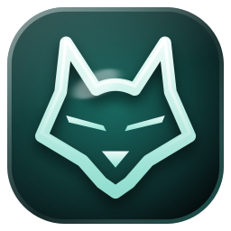

Fenrir Connect, for friends
Your friend hosts. You press Join.
Fenrir Connect opens your host's link, gets your copy of the game ready with the same mods, and joins their server. When you are done, your game goes back exactly as it was.
On your phone? Fenrir Connect runs on a Windows PC. Send this page to your PC and open it there.

Fenrir Connect Connected to Robin’s Fenrir Dashboard Chat Screenshots You Tools GamesGames · from Robin
The games you play together
Robin’s Valheim server
Step 1 · the link
It starts with a link.
Your host sends you a link of your own. It opens a page that greets you by name, says whether the server is up and which mods the game needs, and has one button: Download Fenrir Setup, with your key already inside.
- Nothing to pasteFenrir Setup reads your key by itself, and Fenrir Connect connects on its own.
- A link to one gameA link to a game opens Fenrir Connect straight on that game, so Get ready and Join are one press each.
- Game night, in your timeThe page your link opens shows the next game night in your own time zone.
Hi Juno, come and play Valheim
Windows 10 or 11, with your own copy of Valheim. Your key is inside the Setup.
Valheim tonight? Here’s your link: bright-otter-lane.trycloudflare.com/9TFK3MQZ/play/valheim
Step 2 · Get ready
The same mods. Your own copy.
Get ready puts your host's mods into your own copy of the game, at the exact versions your host plays with, fetched from where their makers publish them.
- From where the mods are publishedThunderstore, GitHub and GameBanana come straight to your PC. A Nexus Mods file you download on its page, in two clicks, as Nexus asks.
- A mod your host madeIt comes from your host's PC, and Fenrir Connect checks it before it goes in.
- Your own mods stay yoursFenrir Connect leaves them alone, and Remove the mods puts every file of your game back.
Get ready · Lethal Company
6of 9 mods
Step 3 · Join
One button. You are in.
Join starts the game and points it at your host's server: Valheim connects straight to the first of your host's addresses that answers, and FiveM opens through its own link.
- Mods only while you playSome games, like Elden Ring with Seamless Co-op, get their mods only while the game runs, and they come out when it closes.
- Your game, as it wasRemove the mods puts every file back. Uninstalling Fenrir Connect takes its mods out of every game first.
- Up to date by itselfFenrir Connect updates itself from your host and, with your host's address relay on, follows them to a new address.
Joining the first of Robin’s addresses that answers: this network, 24 ms
When you are done
Minecraft packs, too
A whole modpack. Installed for you.
When your host shares a Minecraft world, Fenrir Connect puts the whole pack into TLauncher, sets the memory for your PC, and joins the world as soon as the game loads.
- Only what is missingEach file is checked, mostly downloaded straight from CurseForge and Mojang. A download that drops picks up where it stopped.
- Repair and RemoveRepair checks every file against your host's; Remove puts your own folders back.
- Key
- Install
- Play
Install & Play
64%
3,096 of 4,838 files · 11.8 MB/s · about a minute left
Between games
In touch between games.
Answer the next game night with I’m in, on whichever server it is: your app says which game and how long until it starts. In a Minecraft world, read its chat and send a line, ask your host for a hand, and share screenshots with everyone.
- On your phone tooYour code is on the You page. Scan it with Fenrir Link to see who is on and answer game nights from anywhere.
Chat · Riverside
World chat
- Mo joined the world
- Mo anyone got spare iron? the chest at spawn is empty
- Alex second row of the vault, by the door
- Juno on my way, five minutes
Game night
Friday, 21:00 · in 2 hours Valheim · 3 are in: Alex, Mo, JunoNeed a hand?
The Tools page
Something off? Tools has it.
For the evening the game will not start, the server will not answer, or your host asks what is wrong. Every tool answers right where you pressed it.
- Test the connectionWhether your host's Fenrir answers from this PC, how fast, and who can fix it when it does not.
- A summary for your hostThis PC, your mods and the last error in one message to paste. Your key is never in it.
- For a Minecraft worldSend the game's log to your host's Fenrir, which reads it for them, and check every file of the pack against your host's, fixing whatever differs.
Minecraft
A note on Windows
Windows may ask. Press Run anyway.
Fenrir is not signed by a big publisher, so SmartScreen may say Windows protected your PC. Choose More info, then Run anyway. You see it once.
Windows protected your PC
SmartScreen stopped an app it does not recognise from starting.
1More info
What you need
A Windows PC. Your game. A link.
Windows 10 or 11
Fenrir Connect installs for your Windows account only, with no administrator prompt.
Your own copy of the game
Fenrir Connect finds it on your PC, and a game you do not have yet opens on its Steam page. For a Minecraft pack, TLauncher.
The link from your host
It carries your key, so nothing needs pasting. No account, and no password.
Got a link? Open it. That’s all.
The page your host’s link opens has everything, with your key inside. No link yet? Ask your host to invite you from Fenrir's Friends page.
Fenrir Connect for Windows 10 and 11